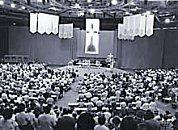

Unnachgiebige Kirche
in Deutschland

Seien Sie willkommen!
|
Unnachgiebige Kirche in Deutschland |
| |
|
Seien Sie willkommen! |
|
Das Wort des Präsidenten
Veranstaltungen:
|
Auszug aus der Rede des Präsidenten der Unnachgiebigen Kirche, Peter Ackerman, die er auf der Generalversammlung in Valencia (Spanien) gehalten hat.
 Meine lieben Freunde! Fast zwei Jahre ist es her, dass ich von Ihnen zum Präsidenten der Unnachgiebigen Kirche gewählt wurde. Heute möchte ich ein paar ganz persönliche Worte an Sie richten. Zunächst einmal danke ich Ihnen von ganzem Herzen für Ihr Vertrauen und Ihre Unterstützung, Ihre Gebete und Ihren Glauben an unsere Mission und an Jesus Christus. Ich bin nicht mehr der Jüngste, und so neige ich immer mehr zu Meditation und Gebet. Manchmal würde ich mich gerne in meinen alten Sessel sinken lassen, klassische Musik hören und die Welt betrachten. Doch sind das nicht sehr anspruchsvolle und auch nicht besonders nützliche Tätigkeiten.Als Präsident der Unnachgiebigen Kirche blicke ich daher in die Zukunft und arbeite jeden Tag entschlossen auf ein Ziel hin. Ich möchte jede Sekunde meines Lebens dazu nutzen, die von der Last des Lebens Gebeugten zu ermutigen, Glauben zu stärken und Zeugnisse zu bekräftigen. Mit Ihrer Hilfe konnte ich in den letzten zwei Jahren zusammen mit unseren hier und heute anwesenden Freunden Sigmund Ortz und Günther Mockels die Mitglieder unserer Organisation in zahlreichen Ländern besuchen. In einigen Ländern haben sich unsere Brüder und Schwestern zu Tausenden versammelt. Meistens bin ich auf die Armen zugegangen. Einige hatten eine andere Augenform oder Hautfarbe als ich, aber dererlei Betrachtungen haben schnell ihre Bedeutung verloren, sobald ich bei ihnen war. Sie wurden ganz einfach zu Söhnen und Töchtern des Schöpfers, aus dem Geist geborene Kinder. Auch wenn wir nicht die gleiche Sprache gesprochen haben, so waren uns doch die Gesten der Brüderlichkeit gemein. Manches Mal war die Reise sehr mühsam, aber noch schwieriger war es, Abschied zu nehmen. Es war immer nur ein kurzer Besuch, eine Versammlung unter vielen. Gerne wäre ich länger geblieben. Am Ende einer jeden Versammlung haben wir „Gott sei mit uns bis zu einem Wiedersehen” gesungen. Dann haben wir unsere Tränen getrocknet, und zu einem freundschaftlichen und herzlichen Abschied mit dem Taschentuch gewunken. Die Gegenwart dieser wunderbaren Menschen macht mir Mut und die Liebe in ihren Blicken gibt mir die notwendige Energie. Über das Jahr hinweg könnte ich ganze Tage hinter meinem Schreibtisch verbringen und mich mit zahlreichen Problemen beschäftigen, die im Grunde nicht von Bedeutung sind. Eigentlich habe ich schon viel zu viel Zeit mit diesen Dingen verbracht, obwohl ich das Gefühl habe, dass meine eigentliche Aufgabe darin liegt, auf die Menschen zuzugehen. Die mehrere Tausend zählenden Mitglieder unserer Kirche haben eines gemein: sie sind davon überzeugt, dass dies das Werk des Allmächtigen ist, und das Jesus, gekreuzigt und wiederauferstanden, unter uns Menschen lebt. Das, was wir „Zeugnis” nennen, ist die Kraft unserer Kirche. Das Zeugnis ist die Quelle unseres Glaubens und unseres Handelns. Es lässt sich nur schwer in Worte fassen und quantifizieren; es ist etwas Ungreifbares und Mysteriöses. Und trotzdem ist es etwas Wirkliches und Starkes, das es mit allen anderen Kräften dieser Erde aufnehmen kann. So sprach der Herr zu Nikodemus: „Der Wind weht, wo er will; du hörst sein Brausen, weißt aber nicht woher er kommt. So ist es mit jedem, der aus dem Geist geboren ist.” (Johannes 3:8). Das, was wir Zeugnis nennen, ist schwer zu definieren, aber die Früchte des Zeugnisses sind offensichtlich. Der Heilige Geist ist es, der Zeugnis ablegt durch uns Menschen. Das Leben der Menschen wird beim Eintritt in unsere Kirche zweifellos maßgeblich von ihrem persönlichen Glaubenszeugnis beeinflusst. Das persönliche Glaubenszeugnis ist der Grund, aus dem sich Mitglieder dazu entschließen, alles aufzugeben und sich in den Dienst des Herrn stellen. Es ist die freundliche und aufmunternde Stimme, die all diejenigen begleitet, die bis zum letzten Tag ihres Leben im Glauben voranschreiten. Das wunderbare und unfassbare Glaubenszeugnis ist vielleicht das wertvollste aller Geschenke Gottes. Wenn wir von Gott zum Dienst berufen werden, steht diese Berufung über Reichtum und Armut. Dieses Glaubenszeugnis in den Herzen unserer Mitglieder drängt sie, ihre Pflicht zu tun. Man findet es in den Herzen der Jungen ebenso wie in den Herzen der Älteren. Damit ist das Glaubenszeugnis die Quintessenz des Werks, das, was das Werk Gottes in der Welt voranbringt. Das, was uns zum Handeln motiviert. Gott fordert uns zum Gehorsam auf. Er versichert uns, dass das Leben einen Sinn hat, dass einige Dinge wichtiger sind als andere, dass wir uns auf einer ewigen Reise befinden und eines Tages von Gott zur Rechenschaft gezogen werden. Überall dort, wo sich unsere Kirche organisiert, ist ihr Einfluss zu spüren. Wir verkünden, was wir wissen. Wir wiederholen es, auch wenn es monoton klingen sollte. Doch wir verkünden es, weil wir nicht wissen, was es anderes zu sagen gäbe. Es ist alles ganz einfach: wir wissen, dass es Gott gibt, dass uns Jesus als Christus erschienen ist, und dass die Religion Ursache und Reich zugleich ist. Die Worte sind einfach, weil sie von Herzen kommen. Das Glaubenszeugnis wirkt überall dort, wo die Kirche organisiert ist, überall dort, wo ihre Mitglieder vom Evangelium sprechen, überall dort, wo Mitglieder ihren Glauben teilen. Ein Glaubenszeugnis lässt sich nicht widerlegen. Unsere Glaubensgegner können ruhig die Heilige Schrift zitieren und stundenlang über das Dogma argumentieren. Sie können geschickt sein und überzeugend wirken. Aber wenn jemand sagt: „Ich weiß” dann sind alle weiteren Diskussionen überflüssig. Vielleicht wird das nicht immer akzeptiert, doch wer kann schon eine Stimme widerlegen oder ableugnen, die aus den Tiefen der Seele kommt und mit so viel Überzeugung aus dem Menschen spricht? Das Glaubenszeugnis ist vielleicht das wertvollste aller Geschenke Gottes. Es ist ein Geschenk des Himmels, wenn wir uns darum bemühen. Jeder Mann und jede Frau in dieser Kirche hat die Möglichkeit, sich eigenverantwortlich von der Wahrheit dieses großen Werks der letzten Tage zu überzeugen und das Glaubenszeugnis derjenigen anzunehmen, die diese Kirche leiten und Zeugnis vom lebendigen Gott und dem Herrn Jesus Christus ablegen. Jesus hat uns den Weg zum Glaubenszeugnis gezeigt, als er gesagt hat: „Meine Lehre stammt nicht von mir, sondern von dem, der mich gesandt hat. Wer bereit ist, den Willen Gottes zu tun, wird erkennen, ob diese Lehre von Gott stammt oder ob ich in meinem eigenen Namen spreche.” (Johannes 7:16-17). Wir wachsen in unserem Glauben und unserer Erkenntnis, indem wir dienen, lernen und beten. Als Jesus 5000 Personen mit Brot gespeist hat, haben sie das Wunder erkannt und gestaunt. Einige sind wiedergekommen. Diese Menschen hat Jesus die Lehre von seiner Göttlichkeit offenbart. Er hat ihnen vorgeworfen, sich nicht genug für die Lehre zu interessieren, sondern sich ausschließlich darum zu kümmern, ihren Hunger zu stillen. „Viele seiner Jünger, die ihm zuhörten, sagten: Was er sagt ist unerträglich. Wer kann das anhören?” (Johannes 6:60). Wer kann einem Mann glauben, der so etwas lehrt? „Daraufhin zogen sich viele Jünger zurück und wanderten nicht mehr mit Ihm umher. Da fragte Jesus die Zwölf: Wollt Ihr auch weggehen? Simon Petrus antwortete ihm: Herr, zu wem sollen wir gehen? Du hast Worte des ewigen Lebens. Wir sind zum Glauben gekommen und haben erkannt: Du bist der Heilige Gottes.” (Johannes 6:66-69). Das ist die große Frage, der auch wir uns stellen müssen: „Herr, zu wem sollen wir gehen?” Und die Antwort lautet: „Du hast Worte des ewigen Lebens. Wir sind zum Glauben gekommen und haben erkannt: Du bist der Heilige Gottes.” Es ist diese Überzeugung, diese innere Gewissheit um die Existenz des lebenden Gottes und der Göttlichkeit seines Sohnes Jesus Christus, die die Grundlage unseres Glaubens bildet. Und genau darauf baut unser Glaubenszeugnis. „Und nun, nach den vielen Zeugnissen, die von ihm gegeben worden sind, ist dies, als letztes von allen, das Zeugnis, das wir geben, nämlich: Er lebt! Denn wir haben ihn gesehen, ja, zur rechten Hand Gottes; und wir haben die Stimme Zeugnis geben hören, dass er der Einziggezeugte des Vaters ist, dass von ihm und durch ihn und aus ihm die Welten sind und dass ihre Bewohner für Gott gezeugte Söhne und Töchter sind.” (L&B 76:22-24). In diesem Sinne möchte ich mein eigenes Zeugnis hinzufügen. Der Herr lebt. Er ist der Gott des Universums und herrscht mit Würde und Macht. Er ist der Vater, an den ich mich im Gebet mit der Gewissheit wenden kann, dass er mich hört und mir antwortet. Jesus ist Christus, sein unsterblicher Sohn, der unter der Leitung des Vaters die Erde erschaffen hat. Er war der Messias, der sein Leben aus Liebe zu uns Menschen auf dem Kreuz als Sühneopfer dargebracht hat. Das Werk, das wir begonnen haben, ist das Werk von unserem Gott Vater und seinem Sohn und wir sind ihre Diener. Wir müssen ihnen Rechenschaft ablegen.
|
Newsletter
|
| Copyright © 1997-2004 Unnachgiebige Kirche in Deutschland. Lackenberg 135, 60055 Frankfurt/Main. |